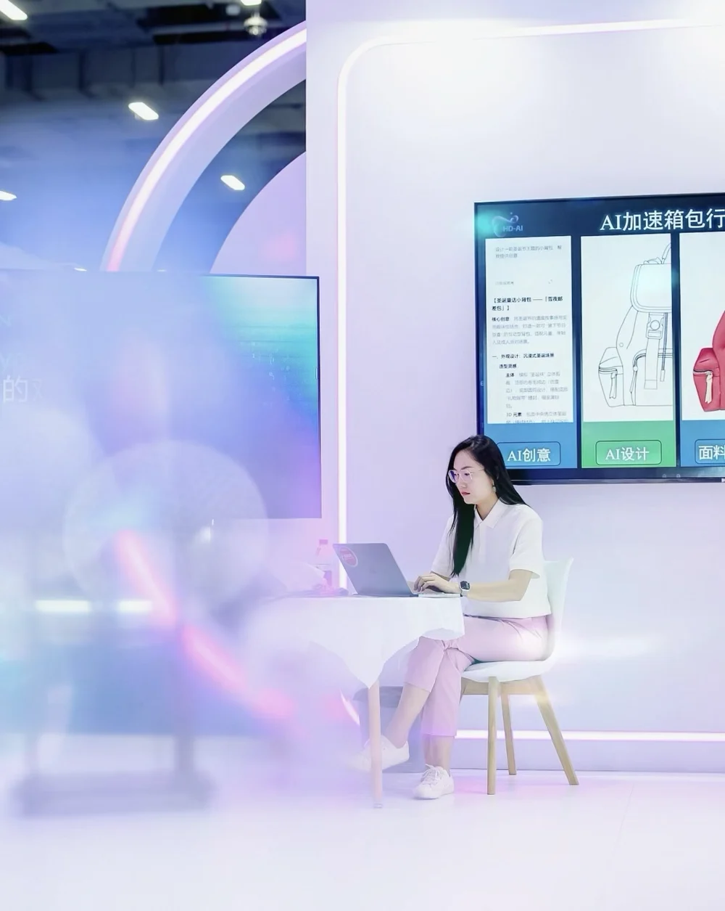

AI工作流标准化
让零经验人员也能独立完成完整参展项目
- 背景
- 小型企业缺乏专业市场人员，参展流程复杂、难以复用。
- 做了什么
- 将完整参展流程拆解为标准化AI Skill，覆盖展会定位、物料生产、双语文案、客户获客路径、CRM承接与执行复盘。
- 结果
- 零经验人员可按流程独立执行，参展经验从个人变成可复用资产。
- 工具
- Claude / ChatGPT
AI WORKFLOW + CONTENT + INSIGHT
不只是会用工具，而是把AI嵌入真实业务流程。

AI自媒体模块
持续探索AI与工作、思维的交叉地带
视频号 · 小红书 · 抖音
分享你的场景，我们一起探讨有没有值得做的事。
开始对话 →